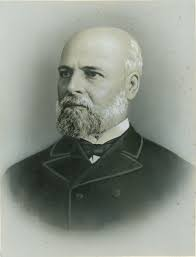

Introdução
A vida de Santos Dumont foi marcada de diversos projetos inovadores sendo conhecido mundialmente como "O Pai da Aviação". Sendo sua terra natal o Brasil, não se poderia falar sobre nosso país sem citar sua grande contribuição para o mundo das aeronaves e para o mundo em geral.
Juventude
"O Rei do Café" - Henrique Dumont
Foto de Henrique Dumont, pai de Antônio Santos Dumont.
Henrique Santos Dumont nasceu no Brasil e foi para a França ainda na infância, para ter melhores condições de estudos, após a morte prematura de seu pai. Henrique estudou na França e não muito tempo depois voltou para o Brasil, para Ouro Preto. Quando chegou, trabalhou como engenheiro de obras públicas. Em uma de suas obras, um comendador havia lhe incubido a construção de um solar em Ouro Preto, comendador esse, pai de sua futura esposa Francisca que desposou em 1856. Henrique teve 6 filhos, sendo Antônio Santos Dumont, seu último filho. Após algum tempo, Henrique se mudou com a família para o Rio de Janeiro e comprou uma fazenda, que usou para plantar café, com uma mão de obra de oitenta escravos (escravos esses que com o passar do tempo foram substituídos por trabalhadores europeus). A fazenda de Henrique foi muito lucrativa, fazendo com que ele ganhasse uma grande quantidade de dinheiro e notoriedade, sendo também conhecido como “O Rei do Café”.
Infância de Antônio Santos Dumont

Imagem de Antônio Santos Dumont com 17 anos em 1890.
A maior parte da infância de Antônio Santos Dumont se passou nessa fazenda, sendo essa a moradia de seus primeiros projetos e anseios aerodinâmicos.
Foi ainda na infância que Antônio começou a ler as obras de Júlio Verne sobre Albatroz, aeronave mais pesada que o ar*, que até o momento, vivia apenas na imaginação de do romancista francês.
Antônio, apesar de apreciar a imaginação de Júlio, sabia que o invento de uma aeronave mais pesada que o ar era um grande desafio para a humanidade naquele momento, pois como a fazenda de seu pai era fortemente equipada com maquinários e modernidades, Antônio reconhecia a grande impossibilidade de colocar um motor, de diversos quilos, no ar.
*Na época de Santos Dumont os dominadores dos céus não eram mais pesados do que o ar, pois os balões de ar quente (como diz o nome), emanavam ar quente, sendo ele mais leve que o ar circundante comum.
Santos Dumont na Europa
Imagem de Santos Dumont em seu carro.
Em certo momento na juventude de Antônio Santos, seu pai sofreu um acidente de cavalo do qual precisou de necessidades especiais, acidente esse que fez com que Henrique Dumont viajasse com toda sua família para a França, afim de cuidar de sua saúde. Lá, Santos Dumont se interessou grandemente pelos motores que funcionavam a gasolina. A França e a Europa em geral, também foram o terreno do início de seus projetos próprios.
Contribuição de Antônio Santos Dumont Para o Brasil e o Mundo
Imagem de Santos Dumont no primeiro voo do 14 bis em 1906.
Santos Dumont, como é conhecido, foi um dos maiores inventores não apenas do Brasil mas do mundo, e contribuiu de diversos modos direta e indiretamente tanto na aerodinâmica mundial como em diferentes áreas do automobilismo.
Leonardo Matias de Carvalho Matos
IFSP-Guarulhos
Técnico em informática para internet.